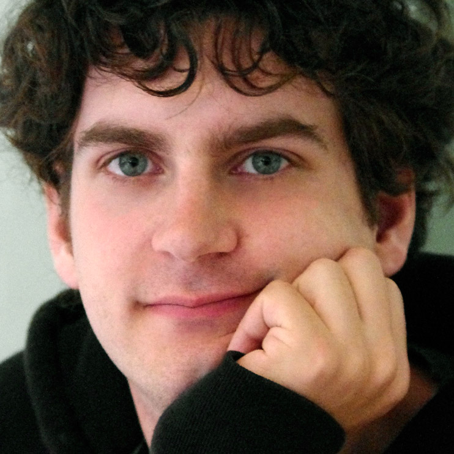
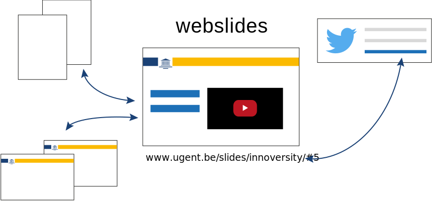
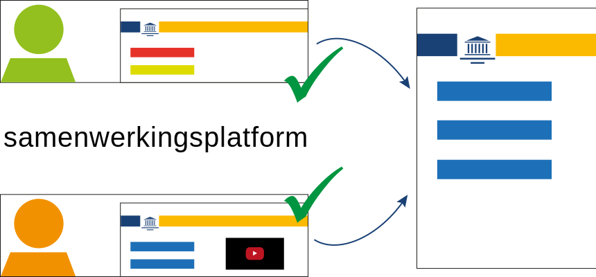

Innoversity Challenge team

Ruben Verborgh
postdoctoraal onderzoeker
Faculteit Ingenieurswetenschappen en Architectuur
Esther De Loof
doctoraatsstudente
Faculteit Psychologie en Pedagogische Wetenschappen
Maak slides zoals websites

Bewerk slides zoals open-source

YouTube-clips naadloos embedden
Impact voor studenten
-
De discussie komt dichter bij het lesmateriaal.
-
Je kan veel sneller feedback geven.
-
HTML-slides werken op ieder toestel.
- laptop, smartphone, tablet…
- zonder software te installeren
Impact voor lesgevers
-
Feedback krijgt een lagere drempel en komt sneller.
- nu komt feedback vaak niet, of te laat
-
Slides kunnen organisch groeien.
- oplossingen voor nu en volgende jaren
-
Gedeelde slides leiden tot sterke internationale visibiliteit.
Impact voor UGent
-
Slides kunnen multidisciplinair naar elkaar linken.
-
De relevantie van onderwijsmateriaal wordt versterkt.
-
Open lesmateriaal brengt directe maatschappelijke valorisatie.
- effent de weg voor economische valorisatie


{kind=link}